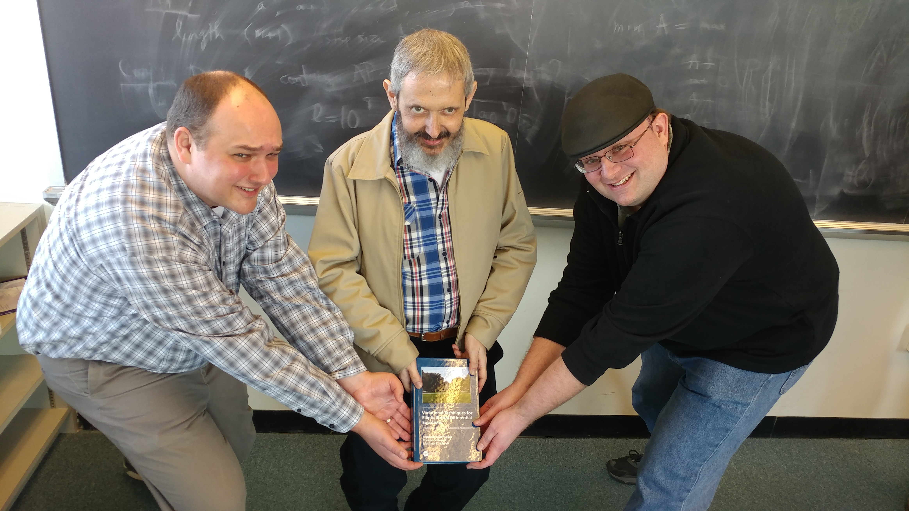

Variational Techniques for Elliptic Partial Differential
Equations: Theoretical Tools and Advanced Applications
[a.k.a. the brick]
Variational Techniques for Elliptic Partial Differential
Equations, intended for graduate students studying applied
math, analysis, and/or numerical analysis, provides the
necessary tools to understand the structure and solvability of
elliptic partial differential equations. Beginning with the
necessary definitions and theorems from distribution theory,
the book gradually builds the functional analytic framework
for studying elliptic PDE using variational formulations.
Rather than introducing all of the prerequisites in the first
chapters, it is the introduction of new problems which
motivates the development of the associated analytical tools.
In this way the student who is encountering this material for
the first time will be aware of exactly what theory is needed,
and for which problems.